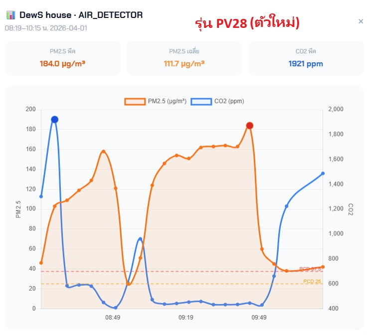
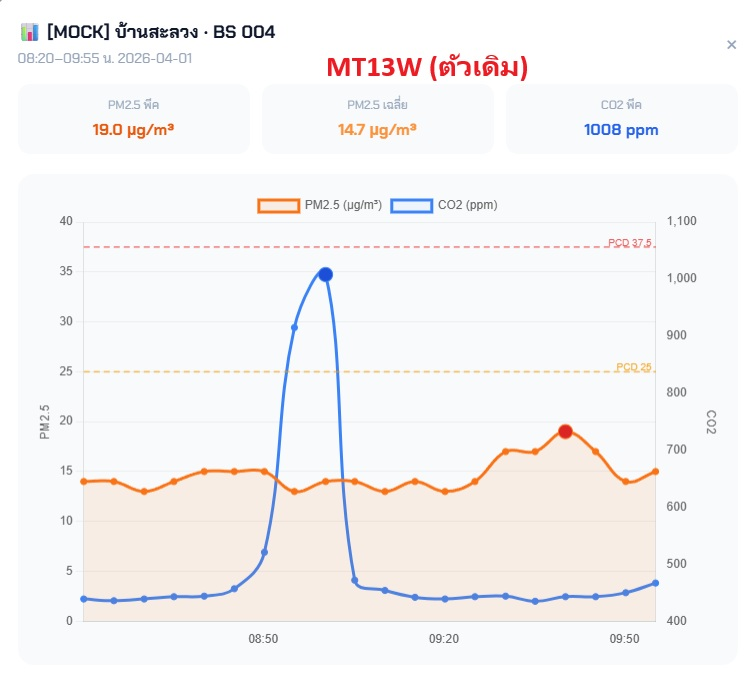
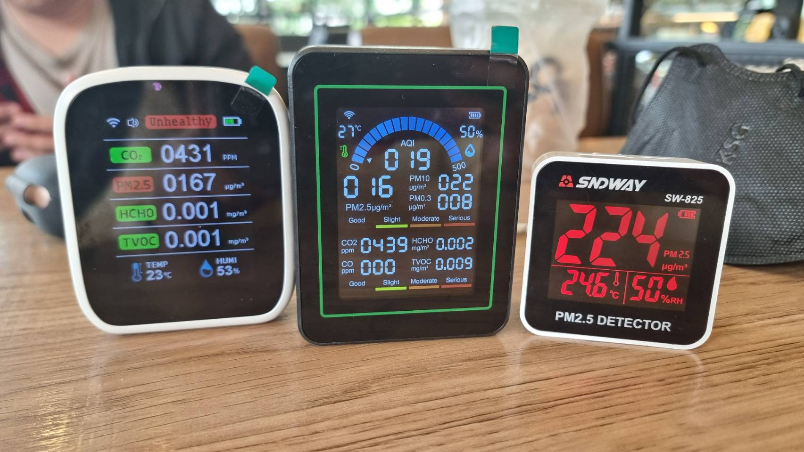
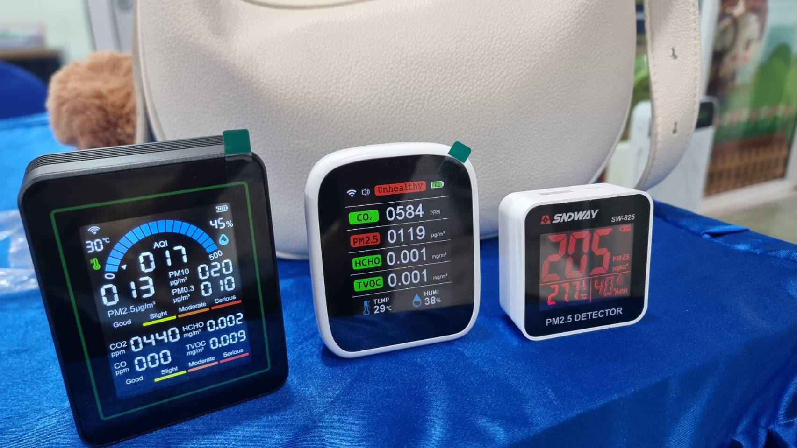
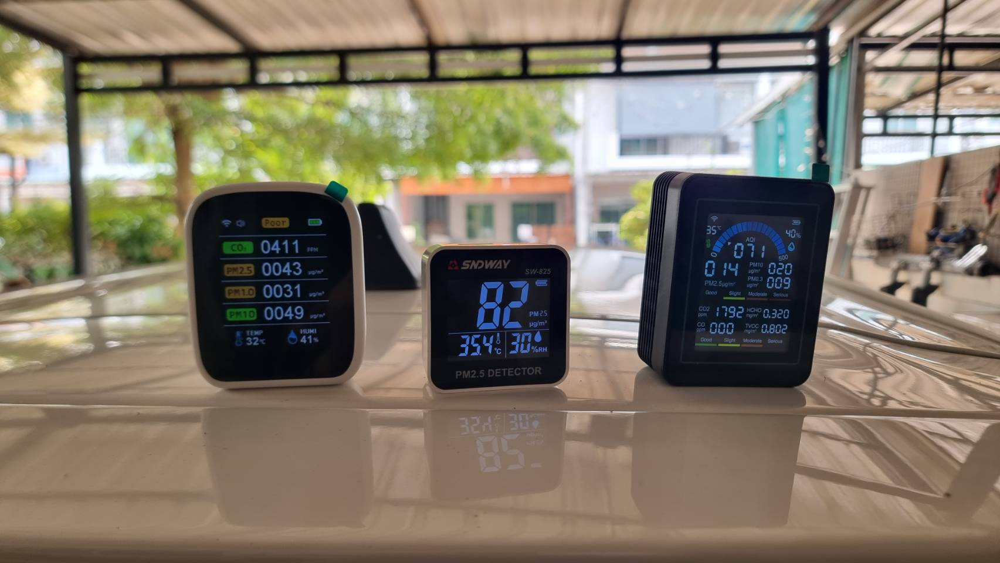

ผลการทดสอบเซนเซอร์ PV28 เทียบกับ MT13W (BS 004)
ทดสอบ: 31 มี.ค. – 2 เม.ย. 2569
MT13W ใช้เซนเซอร์แบบ NDIR (Infrared) ซึ่งไม่ไวพอสำหรับวัด PM2.5
ทดสอบจริง → ค่า PM2.5 ค้างอยู่ที่ 13–16 µg/m³ ทุกสถานที่ ไม่ตอบสนองต่อสภาพแวดล้อม
ขณะที่เครื่องอ้างอิง (SNDway) วัดได้ 82–224 µg/m³ ในที่เดียวกัน
→ จึงต้องหา PV28 ที่ใช้เซนเซอร์ Laser ซึ่งไวกว่าและจับการเปลี่ยนแปลงได้จริง
ค่า TVOC แสดงบนหน้าจอเครื่องได้ แต่ไม่ส่งขึ้น Tuya Cloud
ทำให้ pollution_logs ใน DB มี tvoc_value = null ทุก row
→ อาสาต้องกรอกค่า TVOC ด้วยมือทุก 5 นาที ตลอด session (2 ชม.)
ทดสอบกับท่อไอเสียมอเตอร์ไซค์ → บางเครื่องค่าค้างชั่วคราว
แก้ได้ด้วยการ calibrate 3 ครั้ง ค่ากลับปกติทันที
ปัจจุบันอาสาต้องกรอกมือ: TVOC + CO ทุก 5 นาที
ถ้ามีเซนเซอร์ที่ส่ง TVOC อัตโนมัติ → ลดภาระงานอาสาได้มาก
| ค่าที่วัด | PV28 ตัวทดสอบ | MT13W ตัวเดิม | ต่างกัน? |
|---|---|---|---|
| 📊 CO2 | ✅ ดึงค่าได้ | ✅ ดึงค่าได้ | — |
| 📊 PM2.5 | ✅ ดึงค่าได้ | ✅ ดึงค่าได้ | — |
| 📊 HCHO | ✅ ดึงค่าได้ | ✅ ดึงค่าได้ | — |
| 🌡️ Temp | ✅ ดึงค่าได้ | ✅ ดึงค่าได้ | — |
| 💧 Humidity | ✅ ดึงค่าได้ | ✅ ดึงค่าได้ | — |
| 🌿 VOC / TVOC | ✅ ดึงค่าได้! | ❌ ไม่ส่ง cloud | ⭐ |
| ⚠️ CO | ❌ ไม่มีเลย | ✅ มี | ⭐ |
| 📊 PM1.0 | หน้าจอมี แต่ไม่ส่ง cloud | — | ⭐ |
| 📊 PM10 | หน้าจอมี แต่ไม่ส่ง cloud | ✅ ดึงค่าได้ | ⭐ |
| 🔋 Battery | 800 mAh | 2,000 mAh | ⭐ |
| 📡 Cloud API | 6 data points | 8 data points | — |
| 🔄 เซนเซอร์ค้าง | ไม่ค้าง ✅ | ค้างชั่วคราว | ⭐ |
ข้อมูลจาก Dashboard | 1 เมษายน 2569 เวลา ~08:20–10:15
DewS house | 08:19–10:15

PM2.5 พีค: 184 µg/m³ เฉลี่ย: 111.7
CO2 พีค: 1,921 ppm
→ จับ spike ได้ชัดเจน ทั้ง PM2.5 และ CO2
[MOCK] บ้านสะลวง · BS 004 | 08:20–09:55

PM2.5 พีค: 19 µg/m³ เฉลี่ย: 14.7
CO2 พีค: 1,008 ppm
→ PM2.5 ค่อนข้างราบเรียบ จับ spike CO2 ได้
💡 PV28 ไม่เซนซิทีฟเท่า SNDway แต่จับการเปลี่ยนแปลงของสภาวะ PM2.5 ได้ดีกว่า MT13W ที่ค่าแทบไม่เปลี่ยนเลย
ทั้งสองตัววัดในช่วงเวลาใกล้เคียงกัน (อยู่คนละตำแหน่ง) — ดูภาพทดสอบจริงในหน้าถัดไป
PV28 (ตัวทดสอบ) | MT13W (ตัวเดิม) | SNDway SW-825 (ตัวอ้างอิง)



📊 สรุปจากภาพ — MT13W วัด PM2.5 ได้ 13–16 µg/m³ ทุกสถานที่ (แทบไม่เปลี่ยน)
ขณะที่ PV28 วัดได้ 43–167 µg/m³ ตอบสนองต่อการเปลี่ยนแปลงจริง แม้จะไม่เซนซิทีฟเท่า SNDway (82–224)
ไม่ต้องกรอก TVOC ด้วยมือ — ระบบดึงอัตโนมัติทุก 5 นาที
ลดภาระอาสา ลดความผิดพลาดจากการกรอก
31 มี.ค.: PV28=4, MT13W=3
1 เม.ย.: PV28=23, MT13W=23 ตรงกัน
ใช้ข้อมูลร่วมกันได้ ไม่ต้อง convert
ไม่ต้องแก้ระบบ ใช้ API calls เท่ากัน
1 call/device/5 นาที → ไม่เปลือง quota เพิ่ม
ไม่มีเซนเซอร์ CO — ไม่มีค่าให้อ่านบนหน้าจอ
กรอกมือก็ไม่ได้ เพราะตัวเครื่องไม่ได้วัด
หน้าจอแสดง PM1.0 และ PM10 ได้
แต่ Tuya API ส่งเฉพาะ PM2.5 เท่านั้น
800 mAh vs MT13W 2,000 mAh
ต้องเสียบสายชาร์จขณะวัดค่า
ต้องสั่งล่วงหน้า รอรับ + ตั้งค่า + ทดสอบ
| หัวข้อ | PV28 (ตัวทดสอบ) | MT13W (ตัวปัจจุบัน) |
|---|---|---|
| VOC/TVOC Cloud | ✅ ส่งอัตโนมัติ | ❌ ไม่ส่ง |
| CO | ❌ ไม่มีเลย (กรอกมือก็ไม่ได้) | ✅ มี (ค่าสูงถึงขึ้น) |
| PM2.5 Sensitivity | จับ spike ได้ ✅ | ค่าราบเรียบ ❌ |
| PM1.0 / PM10 | หน้าจอมี แต่ API ไม่ส่ง | ✅ PM10 ส่ง cloud |
| HCHO Scale | เดียวกัน ✅ | เดียวกัน ✅ |
| Battery | 800 mAh | 2,000 mAh |
| API Compatible | ✅ ใช้ร่วมได้ | ✅ เดิม |
| เซนเซอร์ค้าง | ไม่ค้าง ✅ | ค้างชั่วคราว (calibrate แก้ได้) |
| กรอกมือ | ไม่มีค่าต้องกรอก* | TVOC + CO |
💡 ข้อเสนอแนะ
PV28 ใช้เซนเซอร์ Laser → จับการเปลี่ยนแปลง PM2.5 ได้จริง ซึ่งเป็นปัญหาหลักของ MT13W
PV28 เชื่อมต่อ Tuya Cloud และดึงค่าได้ สามารถนำมาทดแทนในระบบได้ โดยต้องมีการปรับเปลี่ยนตามขั้นตอนด้านล่าง
TVOC ดึงค่าจาก Cloud ได้ด้วย (ยังไม่ได้ทดสอบดึงจริงผ่านระบบ ต้องยืนยันอีกครั้ง)
แต่แลกมาด้วย — ไม่มี CO เลย, PM1.0/PM10 ดึง cloud ไม่ได้, แบตต้องเสียบสาย
ถ้า TVOC อัตโนมัติ สำคัญกว่า CO → PV28 น่าสนใจ (แต่จะไม่มีข้อมูล CO เลย)
ถ้า CO จำเป็นสำหรับงานวิจัย → ต้องใช้ MT13W ต่อ (กรอก TVOC มือ)
📦 ถ้าเปลี่ยนมาใช้ PV28 — ต้องทำอะไรบ้าง
| วันที่ 1 | สั่งซื้อ PV28 (จัดส่ง 3 วัน) |
| วันที่ 4 | รับเครื่อง + Pair WiFi + ตั้งค่าเบื้องต้น |
| วันที่ 5–6 | แก้ sync.js รองรับ PV28 DP codes + ทดสอบดึงข้อมูล + ทำสติกเกอร์วิธีใช้ใหม่ + อัพเดทคู่มือ |
| วันที่ 7 | ทดสอบการเก็บข้อมูล + ยืนยันข้อมูลเข้า DB ครบ |
| วันที่ 8 | Deploy + พร้อมใช้งาน |
ประมาณ ~8 วัน นับจากสั่งซื้อ (เผื่อเวลาทดสอบ)
Prepared by WEnDyS Oracle | Data: Tuya Cloud API + Supabase | 2 เมษายน 2569